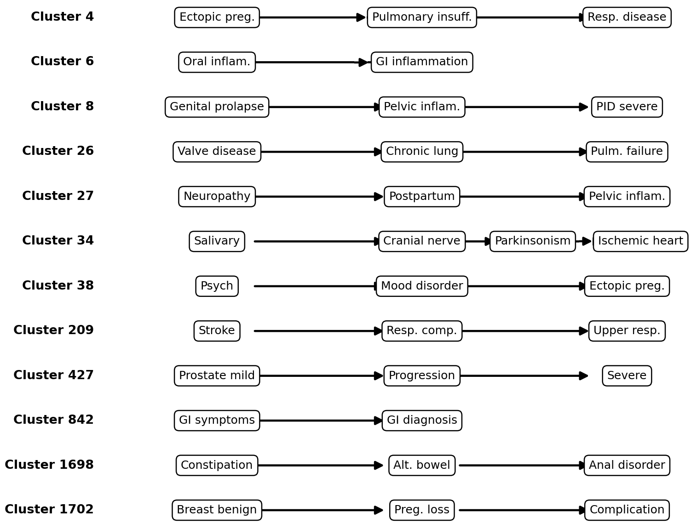
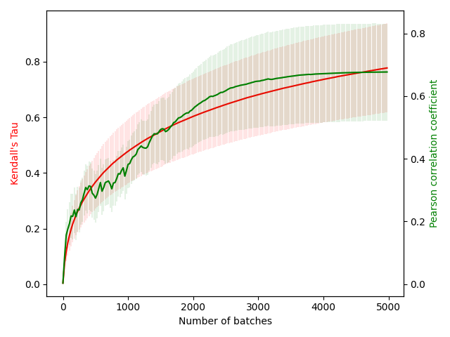
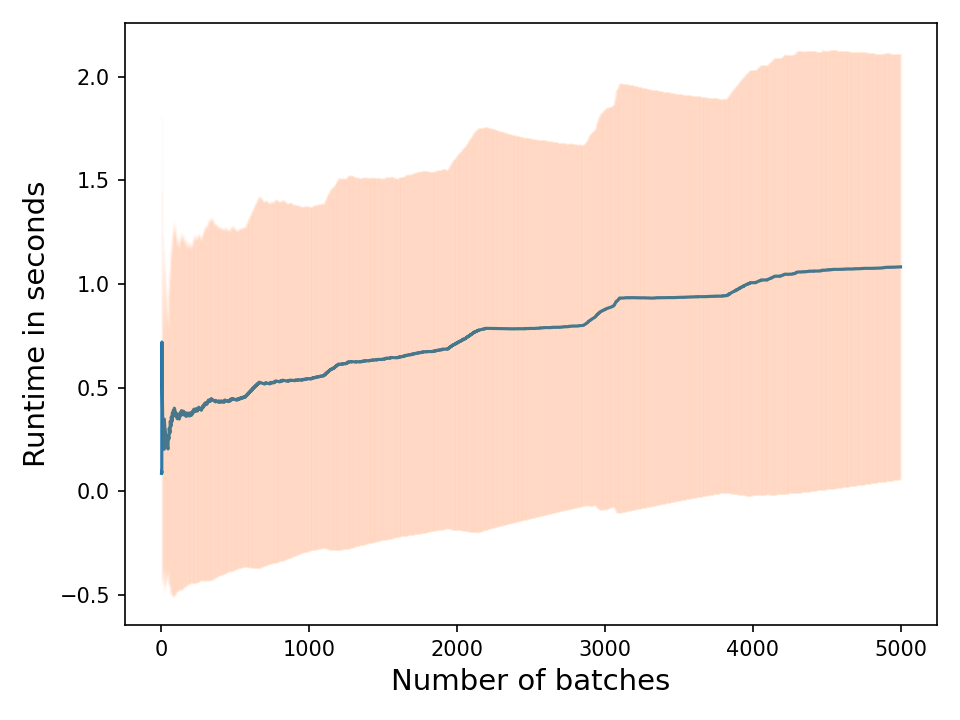

Quasi-Patient Trajectory Simulation & Subtyping
To analyze temporal progression patterns, we simulated cohorts of quasi-patient trajectories using degree-weighted seed sampling and weighted random walks over the directed network. Pairwise trajectory distance matrices based on shared contiguous edge overlaps ($D_{ij} = \frac{1}{|E_i \cap E_j| + 1}$) were evaluated using Agglomerative Hierarchical Clustering. Optimal cohort subtyping was identified at 1,899 distinct trajectory clusters via Silhouette score optimization.

Figure 2. Representative temporal disease progression pathways across discovered patient clusters.
Convergence & Empirical Tracking
The adjustment algorithm was evaluated across 5,000 iterative batches (batch size $H=50$ patients, sequence length 25) starting from a sparse initial graph. Network alignment against full ground-truth re-estimation was tracked using Kendall's rank correlation ($\tau$) and Pearson Correlation Coefficient (PCC).

Figure 3. Progression of Kendall's Tau ($\tau \approx 0.77$) and PCC ($\approx 0.67$) over 5,000 batches. along with batch runtime execution bounds.

Figure 4. Batch runtime execution bounds over 5,000 batches, demonstrating sub-second per-batch processing time (~1.08s) and 3,000x+ speedup versus full retraining (3,158s).
Clinical Progression Interpretation
Comparing inferred network modules against standard clinical taxonomies revealed a moderate pairwise concordance of 0.59, proving that data-driven networks capture multi-system progression dynamics missed by traditional ICD9 disease categories:
- Cascading Failure Pathways: Ectopic pregnancy leading to severe pulmonary insufficiency and respiratory failure (Cluster 4: $6332 \rightarrow 5152 \rightarrow 4858$).
- Cross-System Dysfunctions: Valvular heart disease coupling with chronic obstructive lung disease and pulmonary collapse (Cluster 26: $3979 \rightarrow 4995 \rightarrow 4994$).
- Post-Insult Vulnerabilities: Neurological stroke insult leading to secondary aspiration and upper respiratory infections (Cluster 209: $4340 \rightarrow 4690 \rightarrow 4705$).
- Chronic Relapsing Loops: Bidirectional cyclic transitions in functional bowel disorders (Cluster 1698: $5647 \leftrightarrow 5648 \leftrightarrow 5651$).